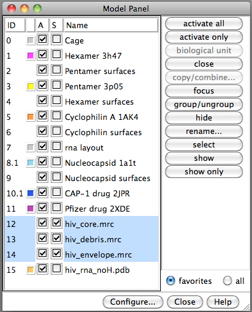
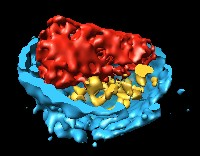
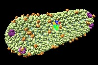
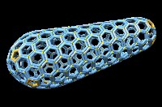
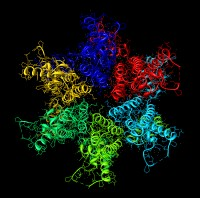
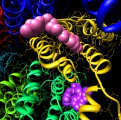
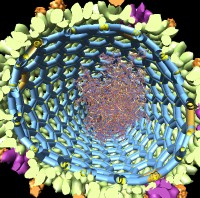

Demonstration: HIV Virus Architecture
This demonstration uses Chimera 1.6 session file hiv-session.py in the data
subdirectory.
Electron Tomography of HIV Virus


- Colors are artificial, only gray levels (density) from electron microscope.
- Blue is lipid envelope cut in half.
- Red is "core" particle containing RNA.
- Yellow is debris -- extra proteins left-over when core was made.
- Virus diameter 110 nanometers.
- Smallest blobs are about the size of one protein, several thousand atoms.
- Resolution is too low to see arrangement of molecules.
- Journal article PubMed 16407061.
Space Navigator
- Space navigator device allows rotation and translation in 3 dimensions.
- Make sure USB cord points forward when holding device.
- Push down to move modes down, towards you to zoom in, twist to rotate.
- Left button on space navigator recenters models.
- Right button toggles simultaneous rotation and translation mode.
Default is not to rotate and translate at same time for easier control.
HIV Core

Choose "core" models in Model Panel and use "Show Only" button.
- Each blob is a protein.
- Yellow is capsid protein arranged in 6-protein rings.
- Purple is capsid protein arranged in 5-protein rings.
- Orange is cyclophilin A, a human protein needed by the virus.
- Rainbow colors are capsid protein shown at higher resolution.
- Journal article PubMed
21248851.
HIV Protein Arrangment

Optional demo segment.
- Core shell consists of 12 pentamers of capsid protein and a few hundred hexamers.
- 5 pentamers and pointy end and 7 pentamers at wide end create distinctive
conical shape.
- Has exactly the cone angle seen in electron microscopy.
Atomic Model of Capsid Hexamer

Show full core model, zoom in on hexamer, then show only hexamer.
- 6 copies of capsid protein
(PubMed 19523676).
- Different colors is to easily see boundaries between molecules.
- Curly ribbons are protein backbone.
- Thin lines are bonds betweeen atoms.
- Dots are water molecules.
Drugs
Use Model Panel to show two drug models.

- CAP-1 drug, Univeristy of Maryland
(PubMed 17826792).
- Other drug developed by Pfizer
(PubMed 21170360).
- These two drugs bind in different locations.
- These drugs prevent the protein from forming hexamers and pentamers.
- Drug resistant strains arise after about 1 week.
- Neither drug is used clinically.
- HIV mutates rapidly so most HIV inhibitors do not make it to market.
HIV Genome

Optional demo segment.
Show core models. Use side view near clip plane
to cut wide end of particle. Show RNA model. Show nucleocapsid model.
- HIV core contains the virus RNA genome, about 9000 nucleotides.
- RNA is covered with 1000 copies of HIV nucleocapsid protein.
- Two copies of RNA inside core.
- Small numbers of other proteins in core (reverse transcriptase,
integrase, tRNA primer, ...)